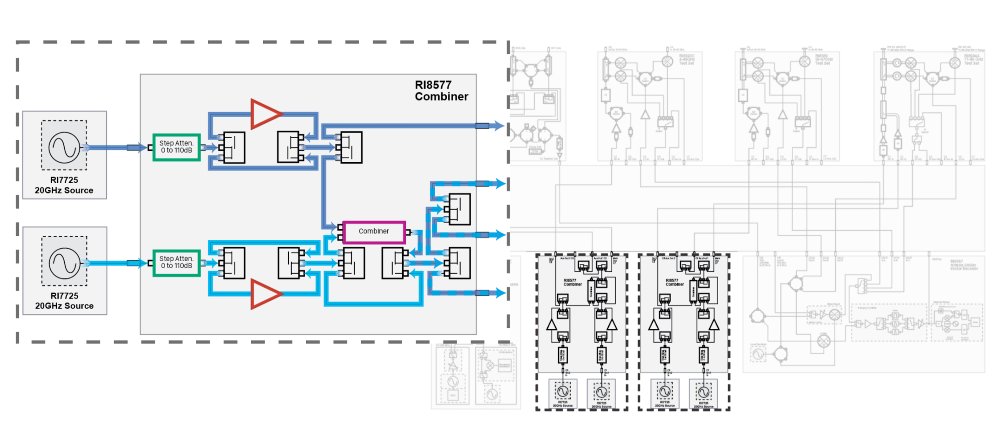
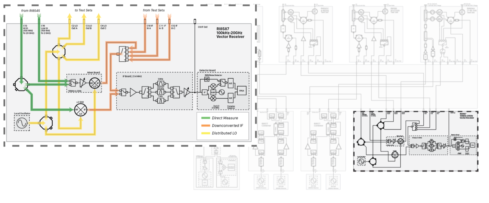

System RF Core
Cassini’s configurable microwave architure starts with the System RF (SyRF) Core. These 20GHz source and measure instruments are the backbone for all power meter, spectrum analyzer, and vector network analyzer capabilities. Combined with a configurable integration layer and frequency converting test sets, the RF core allows Cassini to be scaled vertically to meet future performance benchmarks, and horizontally to capture emerging markets and disruptive technology.

Microwave Sourcing
The RI7725 Source and RI8577 Combiner instruments provide continuous wave sourcing on Cassini. Electromechanical relays in the RI8577 Combiner allow two sources to be routed to four different resources. This provides more freedom when routing signals to resources in the tester or to the device under test. Using the internal relays, both sources can be combined to provide two-tone capability for intermodulation test setups.
More Capability
It’s common practice to use step attenuators and amplification to extend the linear range of microwave sources. But switching between steps cost settling time and life cycle wear. By moving the amplifiers and step attenuators outside of the source, Cassini has access to a wider dynamic source range and more control, providing faster test times, and longer instrument life.
Using the internal relays, both sources can be combined to provide two-tone capability for intermodulation test setups. With amplification and attenuation in each source path, the tones can be adjusted independently to maximize application customization and flexibility.
More Control

While electromechnical relays and step attenuators provide an ideal microwave source environment, both are susceptible to life cycle wear and degradation. With software tracking of component use, automated test program optimization, and by giving control of these resources to the test engineer, the life of the instrument can be doubled compared to traditional test systems.

Synchrodyne Vector Receiver
The hub for all measurements on Cassini, the vector receiver provides two direct measure ports for signals in the 100MHz to 20GHz range and a dedicated low frequency port for signals from 100kHz to 2GHz. The local oscillator can be shared with up to three different frequency converting testsets along with their corresponding downconverted IF signals.
Innovative

In a traditional receiver, signals below the noise floor cannot be measured. This defines the small signal dynamic range of the instrument.
In the signal vector domain, the noise power envelope is distributed across phase while the phase coherent signal is locked to the receiver’s local oscillator.
Vector averaging reduces noise power while the signal remains, effectively extending the dynamic range to the thermal noise floor.

Versatile
The shared local oscillator across instruments coupled with a distributed 10MHz timebase provides phase coherence for all measurements on the test system. This unique microwave architecture allows Cassini to perform S-Parameters across freqeuncy converting devices. The receiver’s port versatility coupled with the test systems’s configurable microwave integration layer enables Cassini to incrementally scale in frequency capability. This provides unparallelled RF pin efficiency and measurement code reuse with the receiver.